Overview
Manufactured and analyzed C- and Hat-stiffened aerostructure panels to evaluate multiple failure modes under predicted loading conditions. Developed detailed SolidWorks models, performed Abaqus FEA to identify critical stress concentrations and validate sizing decisions, and conducted UTM testing to correlate experimental data with theoretical solutions, confirming structural behavior and strengthening confidence in the analysis workflow.
Photos
Analysis
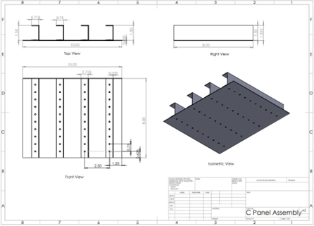
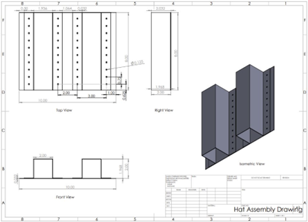
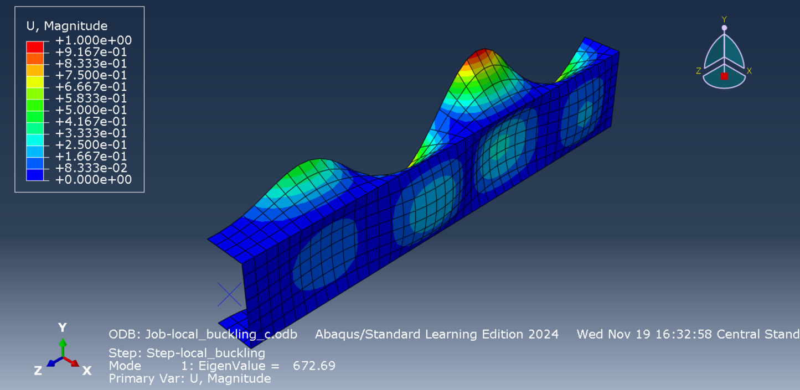
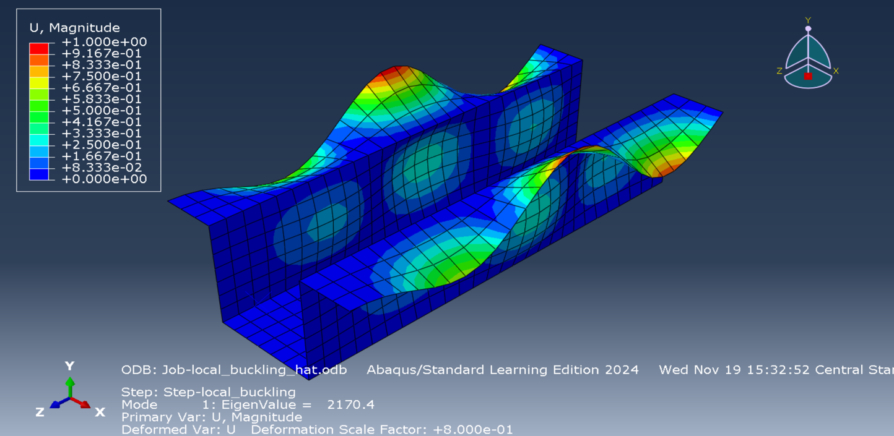
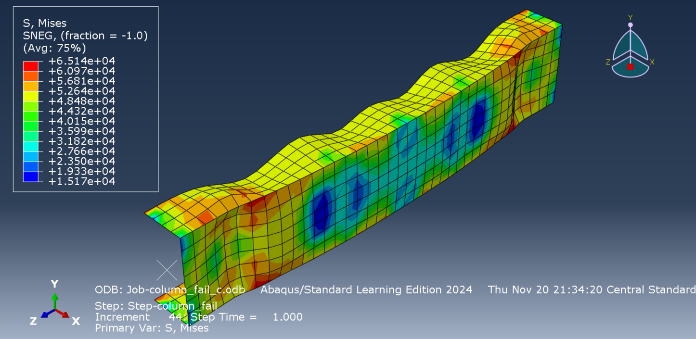
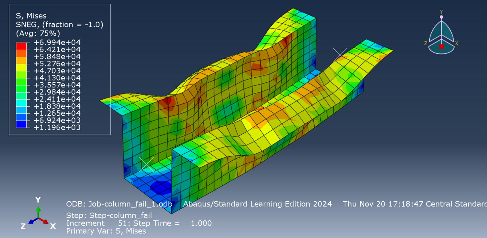
Testing
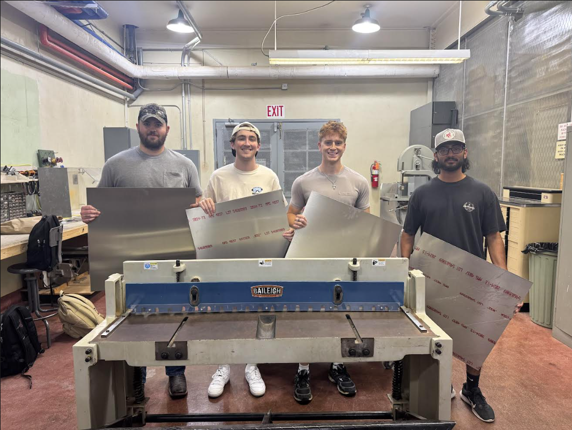
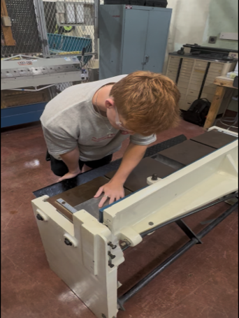
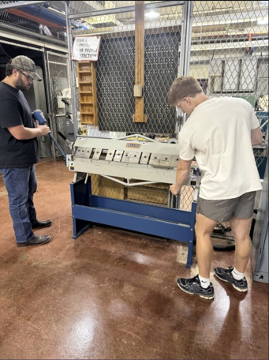
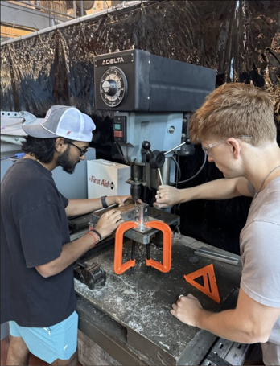
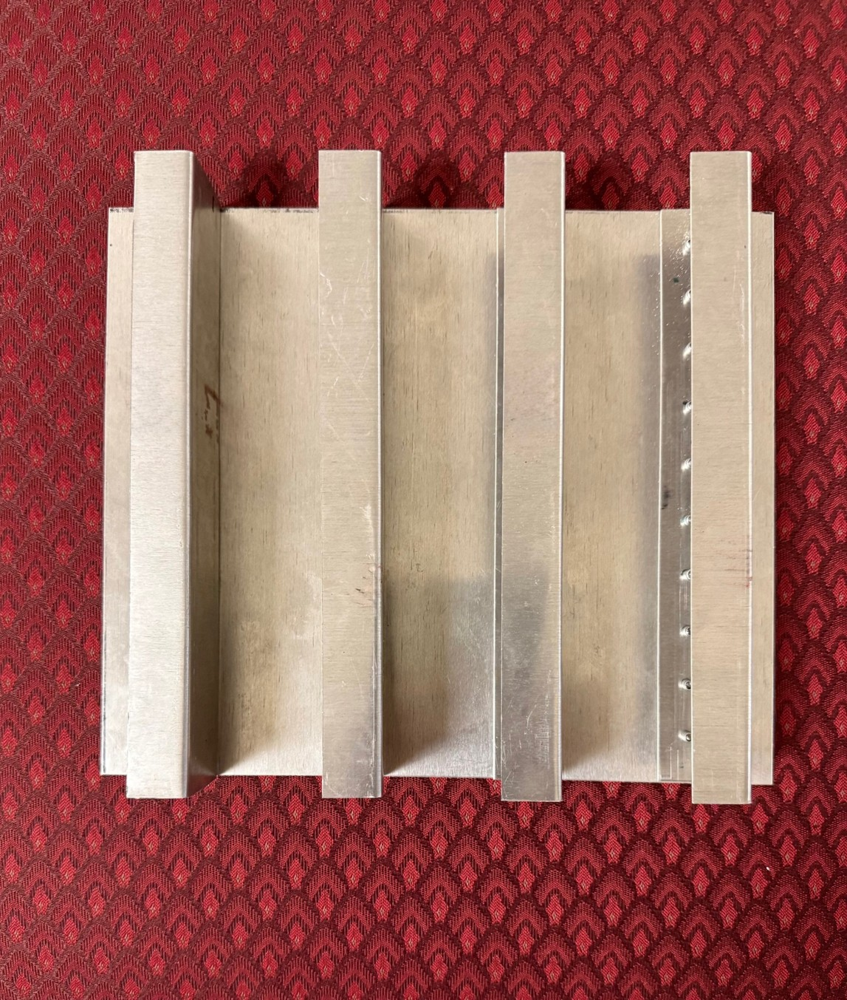
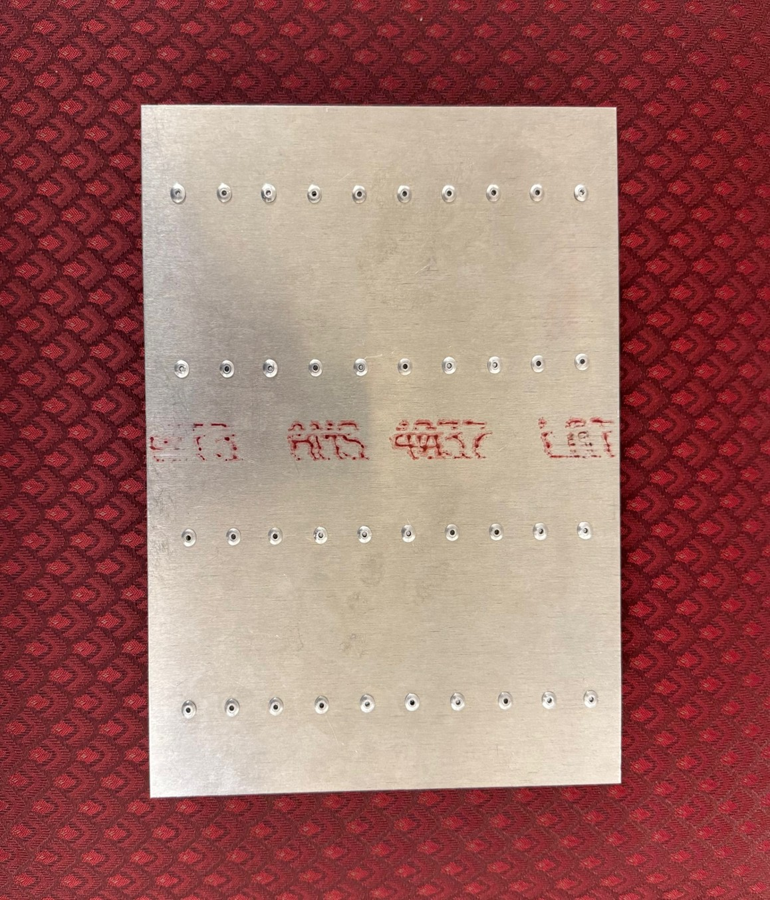
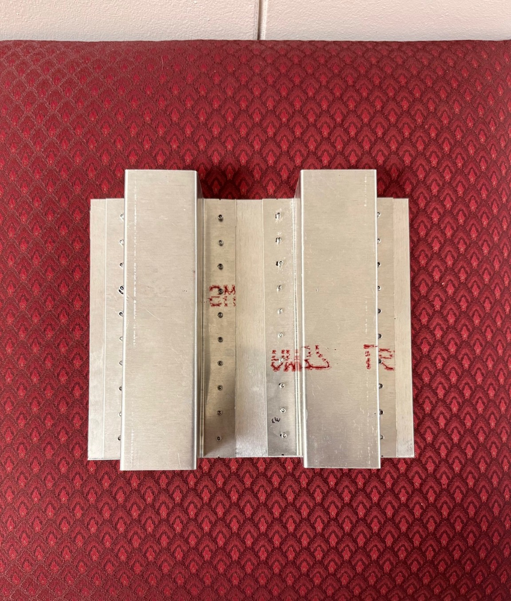
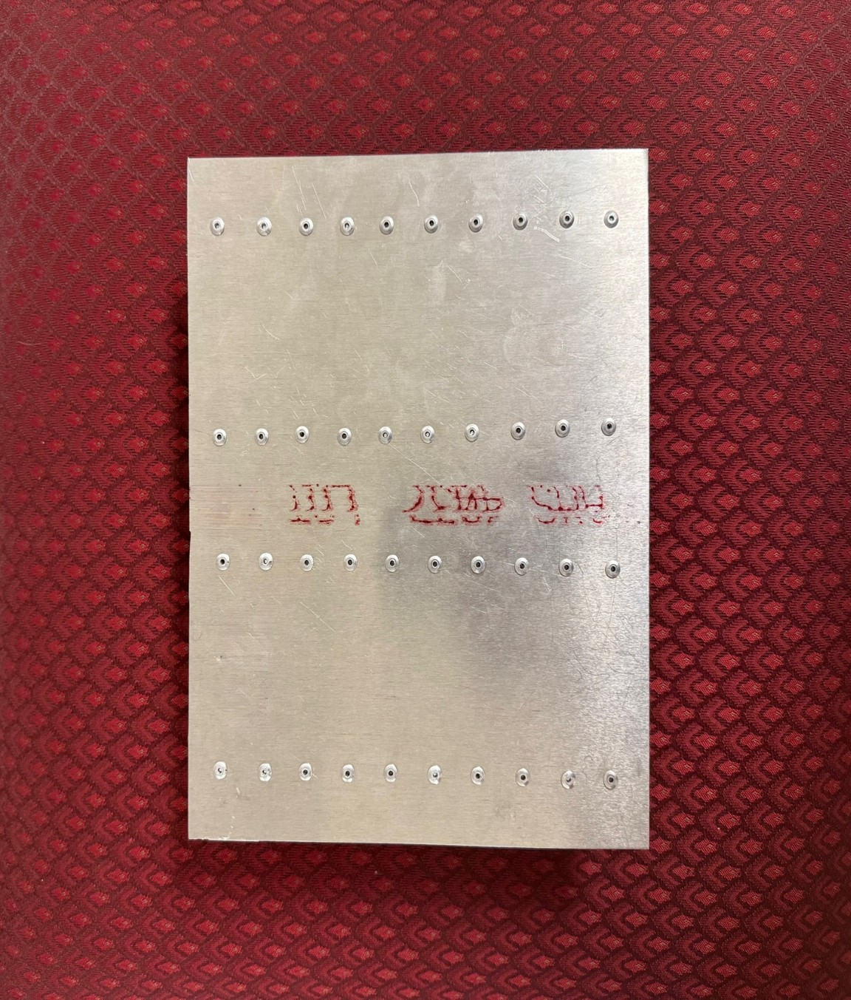

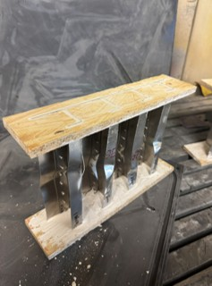
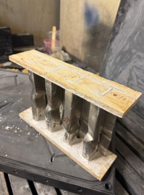
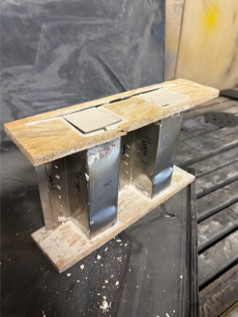
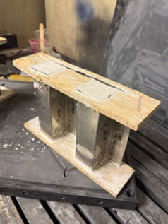
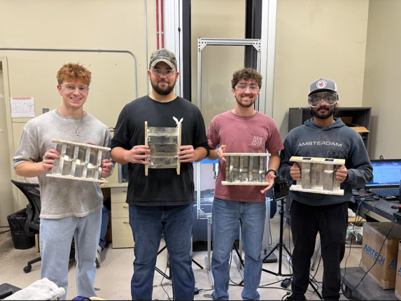
Technical Report
Structural design methodology, finite element results, and experimental validation were presented in a formal technical briefing summarizing multiple failure modes, test correlation, and manufacturing processes.
View Full Report (PDF)My Role
- Engineered stiffened panel models in SolidWorks and executed Abaqus FEA to identify critical stress concentrations and governing failure modes
- Applied GD&T principles to support manufacturability and interface accuracy for sheet metal fabrication processes
- Validated results by comparing UTM test data, computational FEA, and theoretical calculations to assess accuracy and consistency
Tools Used
Sheet Metal Fabrication Abaqus Finite Element Analysis GD&T Stress Analysis DFMEAKey Results
- Maintained a 1.5 factor of safety under predicted failure loads through design and analysis iteration
- Improved manufacturability by aligning design tolerances and GD&T with sheet metal cutting, bending, drilling, and riveting processes
- Achieved 95% agreement between UTM testing, Abaqus FEA, and theoretical calculations